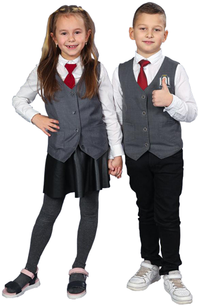
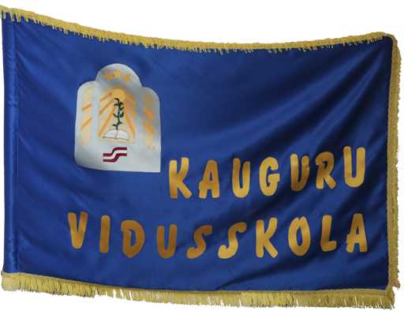

Par mums
Jūrmalas Kauguru vidusskola ir mācību iestāde, kas garantē zināšanu, prasmju un iemaņu apgūšanu Latvijas Republikas Izglītības un zinātnes ministrijas prasību apjomā, kas audzina tikumīgu pilsoni, kurš spēj sekmīgi orientēties dzīves reālijās.
Atmosfērā, kur humāni izturas pret bērniem, strādā augstas kvalifikācijas speciālisti, kuri radoši pielieto mācību-audzināšanas procesā mūsdienīgas tehnoloģijas. Izglītības procesam piemīt audzinošs raksturs.
Skolas absolventi veiksmīgi integrējas sabiedrības dzīvē, saprot savas neatņemamās tiesības un ciena citu cilvēku tiesības.
Skolas simboli
-
Logo -

Skolas forma -

KVS karogs